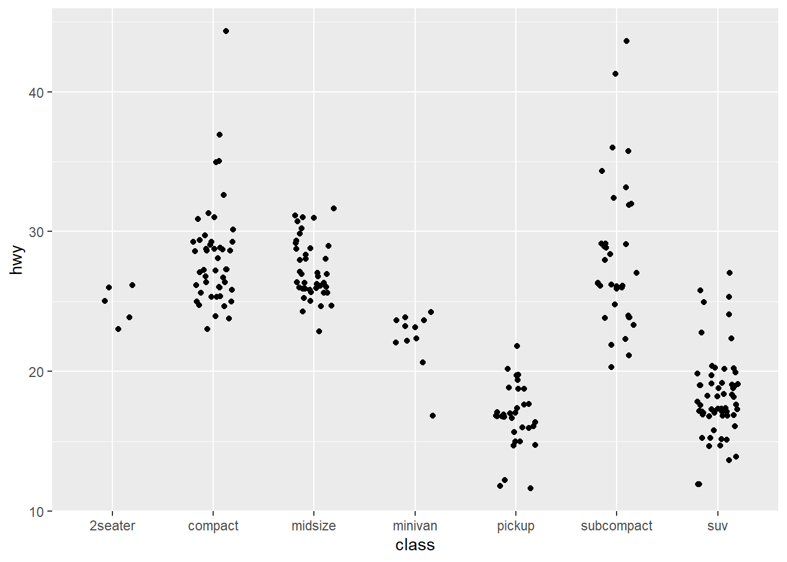
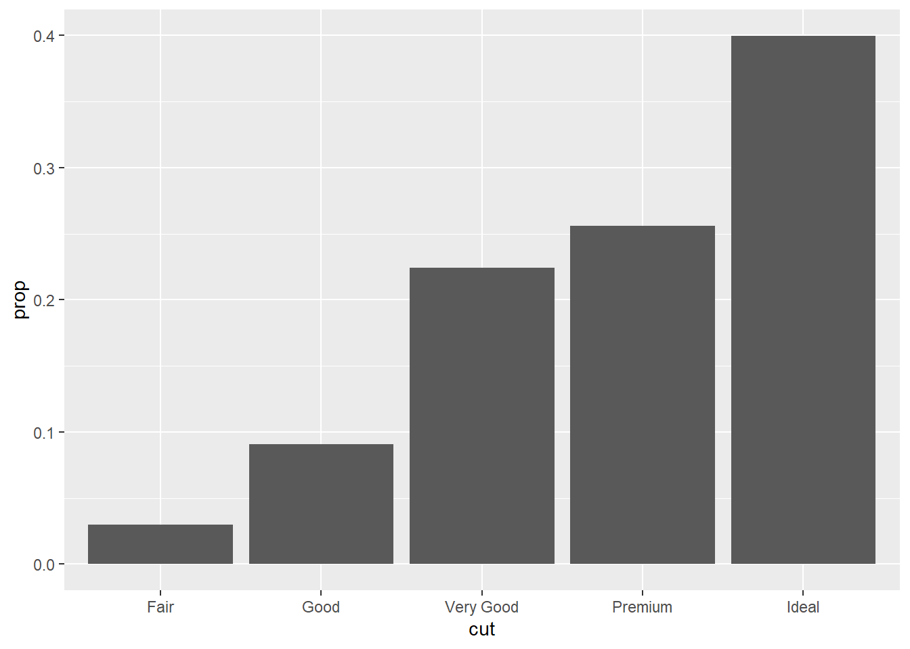
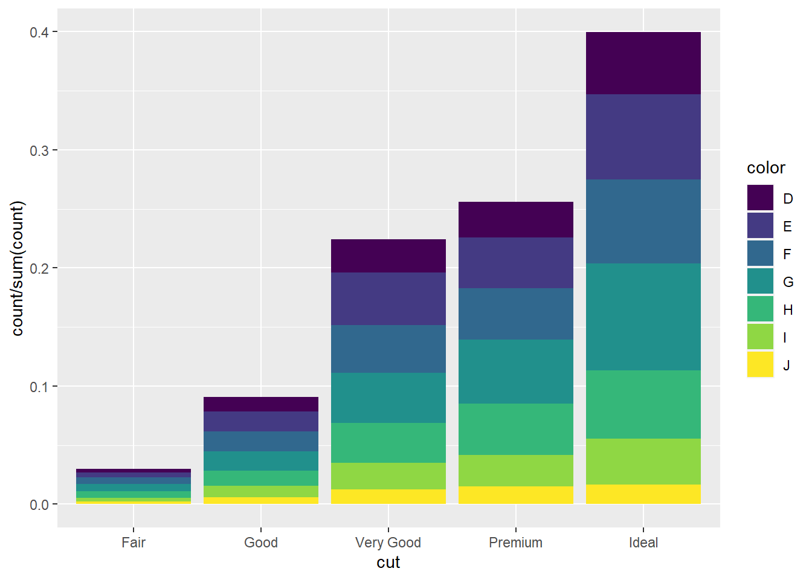
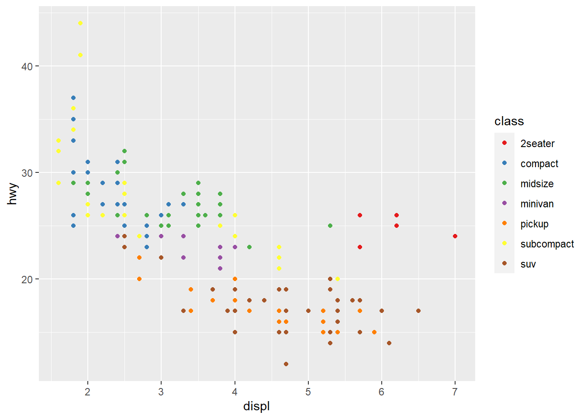
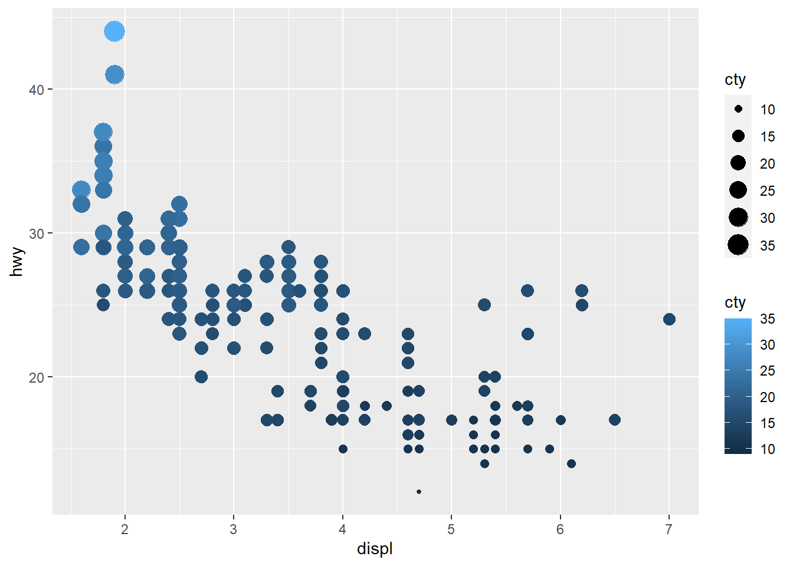

library(tidyverse)
Basics
Modify the code below to make the points larger triangles and
slightly transparent. See ?geom_point for more information
on the point layer.
ggplot(mpg) +
geom_point(aes(x = displ, y = hwy))

Solution:
ggplot(mpg) +
geom_point(aes(x = displ, y = hwy), shape="triangle", size=4, alpha=0.5)
Using the mpg dataset draw a line chart, a boxplot, and
a histogram
Solution:
ggplot(data=mpg)+
geom_line(aes(x=displ, y=hwy))

ggplot(data=mpg)+
geom_boxplot(aes(x=class, y=displ))

ggplot(data=mpg)+
geom_histogram(aes(x=hwy))
## `stat_bin()` using `bins = 30`. Pick better value with `binwidth`.

Stat
What does geom_col() do? How is it different from geom_bar()?
Look at the documentation for geom_bar using
?geom_bar
We learnt that geom_*() and stat_*() are
interchangeable. Can you look at ?geom_bar() and figure out
which stat it uses as default. Modify the code below to use that stat
directly instead
ggplot(mpg) +
geom_bar(aes(x = class))

Solution: The description says “geom_bar() uses stat_count() by
default”. Using it directly below:
ggplot(mpg) +
stat_count(aes(x = class))

Use stat_summary() to add a red dot at the mean
hwy for each group
ggplot(mpg) +
geom_jitter(aes(x = class, y = hwy), width = 0.2)

Hint: You will need to change the default geom of
stat_summary()
Solution:
ggplot(mpg, aes(x=class, y=hwy)) +
geom_jitter(width = 0.2)+
stat_summary(geom = "point", fun="mean", color="red")

In our proportion bar chart, we need to set group = 1. Why? In other
words what is the problem with these two graphs?
p1<- ggplot(data = diamonds) +
geom_bar(mapping = aes(x = cut, y = after_stat(prop)))
p2<-ggplot(data = diamonds) +
geom_bar(mapping = aes(x = cut, fill = color, y = after_stat(prop)))
p1

p2

Solution: if group = 1 is not included, the proportions will be
calculated within each group. Modified code is below.
p1_new<- ggplot(data = diamonds) +
geom_bar(mapping = aes(x = cut, y = after_stat(prop), group=1))
p2_new<-ggplot(data = diamonds) +
geom_bar(mapping = aes(x = cut, fill = color, y = ..count.. / sum(..count..)))
p1_new

p2_new

*** What is the problem with this plot? How could we improve it?
ggplot(data = mpg, mapping = aes(x = cty, y = hwy)) +
geom_point( )
 Solution: There is overplotting because there are multiple observations
for each combination of
Solution: There is overplotting because there are multiple observations
for each combination of cty and hwy
values.
ggplot(data = mpg, mapping = aes(x = cty, y = hwy)) +
geom_point(position="jitter" )

Scales
Use RColorBrewer::display.brewer.all() to see all the
different palettes from Color Brewer and pick your favourite. Modify the
code below to use it
ggplot(mpg) +
geom_point(aes(x = displ, y = hwy, colour = class)) +
scale_colour_brewer(type = 'qual')

Solution:
data("mpg")
ggplot(mpg) +
geom_point(aes(x = displ, y = hwy, colour = class)) +
scale_colour_brewer(type = 'qual', palette = "Set1")

* * *
Modify the code below to create a bubble chart (scatterplot with size
mapped to a continuous variable) showing cyl with size.
Make sure that only the present amount of cylinders (4, 5, 6, and 8) are
present in the legend.
ggplot(mpg) +
geom_point(aes(x = displ, y = hwy, colour = class)) +
scale_colour_brewer(type = 'qual')

Hint: The breaks argument in the scale is used to
control which values are present in the legend.
Solution:
ggplot(mpg) +
geom_point(aes(x = displ, y = hwy, colour = class, size=cyl)) +
scale_colour_brewer(type = 'qual') +
scale_size(breaks = c(4, 5, 6, 8))
Explore the different types of size scales available in ggplot2. Is the
default the most appropriate here?
Solution: Default is mapping to the radius. But it is not intuitive.
Let’s try size mapping by area.
ggplot(mpg) +
geom_point(aes(x = displ, y = hwy, colour = class, size=cyl)) +
scale_colour_brewer(type = 'qual') +
scale_size_area(breaks = c(4, 5, 6, 8))
 * * *
* * *
Modify the code below so that colour is no longer mapped to the
discrete class variable, but to the continuous
cty variable. What happens to the guide (legend)?
ggplot(mpg) +
geom_point(aes(x = displ, y = hwy, colour = class, size = cty))

Solution:
ggplot(mpg) +
geom_point(aes(x = displ, y = hwy, colour = cty, size = cty))

* * *
The type of guide can be controlled with the guide
argument in the scale, or with the guides() function.
Continuous colours have a gradient colour bar by default, but setting it
to legend will turn it back to the standard look. What
happens when multiple aesthetics are mapped to the same variable and
uses the guide type?
Solution:
ggplot(mpg) +
geom_point(aes(x = displ, y = hwy, colour = cty, size = cty))+
guides(color="legend")
 ggplot combines both legends.
ggplot combines both legends.
Facets
One of the great things about facets is that they share the axes
between the different panels. Sometimes this is undesirable though, and
the behavior can be changed with the scales argument.
Experiment with the different possible settings in the plot below:
ggplot(mpg) +
geom_point(aes(x = displ, y = hwy)) +
facet_wrap(~ drv)

Solution:
ggplot(mpg) +
geom_point(aes(x = displ, y = hwy)) +
facet_wrap(~ drv, scales="free_y")
* * *
Usually the space occupied by each panel is equal. This can create
problems when different scales are used. Can you modify the code below
so that the y scale differs between the panels in the plot. What
happens?
ggplot(mpg) +
geom_bar(aes(y = manufacturer)) +
facet_grid(class ~ .)
Use the space argument in facet_grid() to
change the plot above so each bar has the same width again.
Solution:
data("mpg")
ggplot(mpg) +
geom_bar(aes(y = manufacturer)) +
facet_grid(class ~ ., space = "free_y", scales = "free_y")

LS0tDQp0aXRsZTogIk1vZHVsZSA0IC0gRGF0YSBWaXN1YWxpemF0aW9uIg0KYXV0aG9yOiBNZWVuYWtzaGkgS3VzaHdhaGENCmRhdGU6ICcyMDIyLTA3LTI4Jw0Kb3V0cHV0OiANCiAgaHRtbF9kb2N1bWVudDoNCiAgICB0b2M6IHRydWUNCiAgICB0b2NfZmxvYXQ6IHRydWUNCiAgICBjb2RlX2Rvd25sb2FkOiB0cnVlDQotLS0NCg0KYGBge3Igc2V0dXAsIGluY2x1ZGU9RkFMU0V9DQprbml0cjo6b3B0c19jaHVuayRzZXQoZWNobyA9IFRSVUUsIGNhY2hlID0gVFJVRSkNCmBgYA0KDQpgYGB7ciBlY2hvPVRSVUUsIG1lc3NhZ2U9RkFMU0UsIHdhcm5pbmc9RkFMU0V9DQpsaWJyYXJ5KHRpZHl2ZXJzZSkNCmBgYA0KDQojIyMgQmFzaWNzDQoNCk1vZGlmeSB0aGUgY29kZSBiZWxvdyB0byBtYWtlIHRoZSBwb2ludHMgbGFyZ2VyIHRyaWFuZ2xlcyBhbmQgc2xpZ2h0bHkgdHJhbnNwYXJlbnQuDQpTZWUgYD9nZW9tX3BvaW50YCBmb3IgbW9yZSBpbmZvcm1hdGlvbiBvbiB0aGUgcG9pbnQgbGF5ZXIuDQoNCmBgYHtyfQ0KZ2dwbG90KG1wZykgKyANCiAgZ2VvbV9wb2ludChhZXMoeCA9IGRpc3BsLCB5ID0gaHd5KSkNCmBgYA0KDQpTb2x1dGlvbjoNCmBgYHtyfQ0KZ2dwbG90KG1wZykgKyANCiAgZ2VvbV9wb2ludChhZXMoeCA9IGRpc3BsLCB5ID0gaHd5KSwgc2hhcGU9InRyaWFuZ2xlIiwgc2l6ZT00LCBhbHBoYT0wLjUpDQpgYGANCg0KKiAqICoNCg0KVXNpbmcgdGhlIGBtcGdgIGRhdGFzZXQgZHJhdyBhIGxpbmUgY2hhcnQsIGEgYm94cGxvdCwgYW5kIGEgaGlzdG9ncmFtDQoNClNvbHV0aW9uOg0KYGBge3J9DQpnZ3Bsb3QoZGF0YT1tcGcpKw0KICBnZW9tX2xpbmUoYWVzKHg9ZGlzcGwsIHk9aHd5KSkNCmdncGxvdChkYXRhPW1wZykrDQogIGdlb21fYm94cGxvdChhZXMoeD1jbGFzcywgeT1kaXNwbCkpDQpnZ3Bsb3QoZGF0YT1tcGcpKw0KICBnZW9tX2hpc3RvZ3JhbShhZXMoeD1od3kpKQ0KYGBgDQoNCiMjIyBTdGF0DQoNCldoYXQgZG9lcyBnZW9tX2NvbCgpIGRvPyBIb3cgaXMgaXQgZGlmZmVyZW50IGZyb20gZ2VvbV9iYXIoKT8NCg0KTG9vayBhdCB0aGUgZG9jdW1lbnRhdGlvbiBmb3IgZ2VvbV9iYXIgdXNpbmcgYD9nZW9tX2JhcmANCg0KKiAqICoNCg0KV2UgbGVhcm50IHRoYXQgYGdlb21fKigpYCBhbmQgYHN0YXRfKigpYCBhcmUgaW50ZXJjaGFuZ2VhYmxlLiBDYW4geW91IGxvb2sgYXQgYD9nZW9tX2JhcigpYCBhbmQgZmlndXJlIG91dCB3aGljaA0Kc3RhdCBpdCB1c2VzIGFzIGRlZmF1bHQuIE1vZGlmeSB0aGUgY29kZSBiZWxvdyB0byB1c2UgdGhhdCBzdGF0IGRpcmVjdGx5IGluc3RlYWQNCg0KYGBge3J9DQpnZ3Bsb3QobXBnKSArIA0KICBnZW9tX2JhcihhZXMoeCA9IGNsYXNzKSkNCmBgYA0KDQpTb2x1dGlvbjoNClRoZSBkZXNjcmlwdGlvbiBzYXlzICJnZW9tX2JhcigpIHVzZXMgc3RhdF9jb3VudCgpIGJ5IGRlZmF1bHQiLiBVc2luZyBpdCBkaXJlY3RseSBiZWxvdzoNCmBgYHtyfQ0KZ2dwbG90KG1wZykgKyANCiAgc3RhdF9jb3VudChhZXMoeCA9IGNsYXNzKSkNCmBgYA0KDQoqICogKg0KVXNlIGBzdGF0X3N1bW1hcnkoKWAgdG8gYWRkIGEgcmVkIGRvdCBhdCB0aGUgbWVhbiBgaHd5YCBmb3IgZWFjaCBncm91cA0KDQpgYGB7cn0NCmdncGxvdChtcGcpICsgDQogIGdlb21faml0dGVyKGFlcyh4ID0gY2xhc3MsIHkgPSBod3kpLCB3aWR0aCA9IDAuMikNCmBgYA0KSGludDogWW91IHdpbGwgbmVlZCB0byBjaGFuZ2UgdGhlIGRlZmF1bHQgZ2VvbSBvZiBgc3RhdF9zdW1tYXJ5KClgDQoNClNvbHV0aW9uOg0KYGBge3J9DQpnZ3Bsb3QobXBnLCBhZXMoeD1jbGFzcywgeT1od3kpKSArIA0KICBnZW9tX2ppdHRlcih3aWR0aCA9IDAuMikrDQogIHN0YXRfc3VtbWFyeShnZW9tID0gInBvaW50IiwgZnVuPSJtZWFuIiwgY29sb3I9InJlZCIpDQpgYGANCg0KDQoqICogKg0KDQpJbiBvdXIgcHJvcG9ydGlvbiBiYXIgY2hhcnQsIHdlIG5lZWQgdG8gc2V0IGdyb3VwID0gMS4gV2h5PyBJbiBvdGhlciB3b3JkcyB3aGF0IGlzIHRoZSBwcm9ibGVtIHdpdGggdGhlc2UgdHdvIGdyYXBocz8NCmBgYHtyfQ0KcDE8LSBnZ3Bsb3QoZGF0YSA9IGRpYW1vbmRzKSArIA0KICBnZW9tX2JhcihtYXBwaW5nID0gYWVzKHggPSBjdXQsIHkgPSBhZnRlcl9zdGF0KHByb3ApKSkNCg0KcDI8LWdncGxvdChkYXRhID0gZGlhbW9uZHMpICsgDQogIGdlb21fYmFyKG1hcHBpbmcgPSBhZXMoeCA9IGN1dCwgZmlsbCA9IGNvbG9yLCB5ID0gYWZ0ZXJfc3RhdChwcm9wKSkpDQoNCnAxDQpwMg0KYGBgDQoNClNvbHV0aW9uOg0KaWYgZ3JvdXAgPSAxIGlzIG5vdCBpbmNsdWRlZCwgdGhlIHByb3BvcnRpb25zIHdpbGwgYmUgY2FsY3VsYXRlZCB3aXRoaW4gZWFjaCBncm91cC4gTW9kaWZpZWQgY29kZSBpcyBiZWxvdy4gDQpgYGB7cn0NCnAxX25ldzwtIGdncGxvdChkYXRhID0gZGlhbW9uZHMpICsgDQogIGdlb21fYmFyKG1hcHBpbmcgPSBhZXMoeCA9IGN1dCwgeSA9IGFmdGVyX3N0YXQocHJvcCksIGdyb3VwPTEpKQ0KDQpwMl9uZXc8LWdncGxvdChkYXRhID0gZGlhbW9uZHMpICsgDQogIGdlb21fYmFyKG1hcHBpbmcgPSBhZXMoeCA9IGN1dCwgZmlsbCA9IGNvbG9yLCB5ID0gLi5jb3VudC4uIC8gc3VtKC4uY291bnQuLikpKQ0KDQpwMV9uZXcNCnAyX25ldw0KYGBgDQoqKioNCldoYXQgaXMgdGhlIHByb2JsZW0gd2l0aCB0aGlzIHBsb3Q/IEhvdyBjb3VsZCB3ZSBpbXByb3ZlIGl0Pw0KDQpgYGB7cn0NCmdncGxvdChkYXRhID0gbXBnLCBtYXBwaW5nID0gYWVzKHggPSBjdHksIHkgPSBod3kpKSArIA0KICBnZW9tX3BvaW50KCApDQpgYGANClNvbHV0aW9uOg0KVGhlcmUgaXMgb3ZlcnBsb3R0aW5nIGJlY2F1c2UgdGhlcmUgYXJlIG11bHRpcGxlIG9ic2VydmF0aW9ucyBmb3IgZWFjaCBjb21iaW5hdGlvbiBvZiBgY3R5YCBhbmQgYGh3eWAgdmFsdWVzLiANCmBgYHtyfQ0KZ2dwbG90KGRhdGEgPSBtcGcsIG1hcHBpbmcgPSBhZXMoeCA9IGN0eSwgeSA9IGh3eSkpICsgDQogIGdlb21fcG9pbnQocG9zaXRpb249ImppdHRlciIgKQ0KYGBgDQoNCiMjIyBTY2FsZXMNCg0KVXNlIGBSQ29sb3JCcmV3ZXI6OmRpc3BsYXkuYnJld2VyLmFsbCgpYCB0byBzZWUgYWxsIHRoZSBkaWZmZXJlbnQgcGFsZXR0ZXMgZnJvbQ0KQ29sb3IgQnJld2VyIGFuZCBwaWNrIHlvdXIgZmF2b3VyaXRlLiBNb2RpZnkgdGhlIGNvZGUgYmVsb3cgdG8gdXNlIGl0DQoNCmBgYHtyfQ0KZ2dwbG90KG1wZykgKyANCiAgZ2VvbV9wb2ludChhZXMoeCA9IGRpc3BsLCB5ID0gaHd5LCBjb2xvdXIgPSBjbGFzcykpICsgDQogIHNjYWxlX2NvbG91cl9icmV3ZXIodHlwZSA9ICdxdWFsJykNCmBgYA0KDQpTb2x1dGlvbjoNCmBgYHtyfQ0KZGF0YSgibXBnIikNCmdncGxvdChtcGcpICsgDQogIGdlb21fcG9pbnQoYWVzKHggPSBkaXNwbCwgeSA9IGh3eSwgY29sb3VyID0gY2xhc3MpKSArIA0KICBzY2FsZV9jb2xvdXJfYnJld2VyKHR5cGUgPSAncXVhbCcsIHBhbGV0dGUgPSAiU2V0MSIpDQpgYGANCiogKiAqDQoNCk1vZGlmeSB0aGUgY29kZSBiZWxvdyB0byBjcmVhdGUgYSBidWJibGUgY2hhcnQgKHNjYXR0ZXJwbG90IHdpdGggc2l6ZSBtYXBwZWQgdG8NCmEgY29udGludW91cyB2YXJpYWJsZSkgc2hvd2luZyBgY3lsYCB3aXRoIHNpemUuIE1ha2Ugc3VyZSB0aGF0IG9ubHkgdGhlIHByZXNlbnQgDQphbW91bnQgb2YgY3lsaW5kZXJzICg0LCA1LCA2LCBhbmQgOCkgYXJlIHByZXNlbnQgaW4gdGhlIGxlZ2VuZC4NCg0KYGBge3J9DQpnZ3Bsb3QobXBnKSArIA0KICBnZW9tX3BvaW50KGFlcyh4ID0gZGlzcGwsIHkgPSBod3ksIGNvbG91ciA9IGNsYXNzKSkgKyANCiAgc2NhbGVfY29sb3VyX2JyZXdlcih0eXBlID0gJ3F1YWwnKQ0KYGBgDQoNCkhpbnQ6IFRoZSBgYnJlYWtzYCBhcmd1bWVudCBpbiB0aGUgc2NhbGUgaXMgdXNlZCB0byBjb250cm9sIHdoaWNoIHZhbHVlcyBhcmUNCnByZXNlbnQgaW4gdGhlIGxlZ2VuZC4NCg0KU29sdXRpb246DQpgYGB7cn0NCmdncGxvdChtcGcpICsgDQogIGdlb21fcG9pbnQoYWVzKHggPSBkaXNwbCwgeSA9IGh3eSwgY29sb3VyID0gY2xhc3MsIHNpemU9Y3lsKSkgKyANCiAgc2NhbGVfY29sb3VyX2JyZXdlcih0eXBlID0gJ3F1YWwnKSArDQogIHNjYWxlX3NpemUoYnJlYWtzID0gYyg0LCA1LCA2LCA4KSkNCmBgYA0KRXhwbG9yZSB0aGUgZGlmZmVyZW50IHR5cGVzIG9mIHNpemUgc2NhbGVzIGF2YWlsYWJsZSBpbiBnZ3Bsb3QyLiBJcyB0aGUgZGVmYXVsdA0KdGhlIG1vc3QgYXBwcm9wcmlhdGUgaGVyZT8NCg0KU29sdXRpb246DQpEZWZhdWx0IGlzIG1hcHBpbmcgdG8gdGhlIHJhZGl1cy4gQnV0IGl0IGlzIG5vdCBpbnR1aXRpdmUuIExldCdzIHRyeSBzaXplIG1hcHBpbmcgYnkgYXJlYS4gDQpgYGB7cn0NCmdncGxvdChtcGcpICsgDQogIGdlb21fcG9pbnQoYWVzKHggPSBkaXNwbCwgeSA9IGh3eSwgY29sb3VyID0gY2xhc3MsIHNpemU9Y3lsKSkgKyANCiAgc2NhbGVfY29sb3VyX2JyZXdlcih0eXBlID0gJ3F1YWwnKSArDQogIHNjYWxlX3NpemVfYXJlYShicmVha3MgPSBjKDQsIDUsIDYsIDgpKQ0KYGBgDQoqICogKg0KDQpNb2RpZnkgdGhlIGNvZGUgYmVsb3cgc28gdGhhdCBjb2xvdXIgaXMgbm8gbG9uZ2VyIG1hcHBlZCB0byB0aGUgZGlzY3JldGUgYGNsYXNzYA0KdmFyaWFibGUsIGJ1dCB0byB0aGUgY29udGludW91cyBgY3R5YCB2YXJpYWJsZS4gV2hhdCBoYXBwZW5zIHRvIHRoZSBndWlkZSAobGVnZW5kKT8NCg0KYGBge3J9DQpnZ3Bsb3QobXBnKSArIA0KICBnZW9tX3BvaW50KGFlcyh4ID0gZGlzcGwsIHkgPSBod3ksIGNvbG91ciA9IGNsYXNzLCBzaXplID0gY3R5KSkNCmBgYA0KDQpTb2x1dGlvbjoNCmBgYHtyfQ0KZ2dwbG90KG1wZykgKyANCiAgZ2VvbV9wb2ludChhZXMoeCA9IGRpc3BsLCB5ID0gaHd5LCBjb2xvdXIgPSBjdHksIHNpemUgPSBjdHkpKQ0KYGBgDQoqICogKg0KDQpUaGUgdHlwZSBvZiBndWlkZSBjYW4gYmUgY29udHJvbGxlZCB3aXRoIHRoZSBgZ3VpZGVgIGFyZ3VtZW50IGluIHRoZSBzY2FsZSwgb3IgDQp3aXRoIHRoZSBgZ3VpZGVzKClgIGZ1bmN0aW9uLiBDb250aW51b3VzIGNvbG91cnMgaGF2ZSBhIGdyYWRpZW50IGNvbG91ciBiYXIgYnkgDQpkZWZhdWx0LCBidXQgc2V0dGluZyBpdCB0byBgbGVnZW5kYCB3aWxsIHR1cm4gaXQgYmFjayB0byB0aGUgc3RhbmRhcmQgbG9vay4gV2hhdCANCmhhcHBlbnMgd2hlbiBtdWx0aXBsZSBhZXN0aGV0aWNzIGFyZSBtYXBwZWQgdG8gdGhlIHNhbWUgdmFyaWFibGUgYW5kIHVzZXMgdGhlIA0KZ3VpZGUgdHlwZT8NCg0KU29sdXRpb246DQoNCmBgYHtyfQ0KZ2dwbG90KG1wZykgKyANCiAgZ2VvbV9wb2ludChhZXMoeCA9IGRpc3BsLCB5ID0gaHd5LCBjb2xvdXIgPSBjdHksIHNpemUgPSBjdHkpKSsNCiAgZ3VpZGVzKGNvbG9yPSJsZWdlbmQiKQ0KYGBgDQpnZ3Bsb3QgY29tYmluZXMgYm90aCBsZWdlbmRzLiANCg0KIyMjIEZhY2V0cw0KDQpPbmUgb2YgdGhlIGdyZWF0IHRoaW5ncyBhYm91dCBmYWNldHMgaXMgdGhhdCB0aGV5IHNoYXJlIHRoZSBheGVzIGJldHdlZW4gdGhlIA0KZGlmZmVyZW50IHBhbmVscy4gU29tZXRpbWVzIHRoaXMgaXMgdW5kZXNpcmFibGUgdGhvdWdoLCBhbmQgdGhlIGJlaGF2aW9yIGNhbg0KYmUgY2hhbmdlZCB3aXRoIHRoZSBgc2NhbGVzYCBhcmd1bWVudC4gRXhwZXJpbWVudCB3aXRoIHRoZSBkaWZmZXJlbnQgcG9zc2libGUNCnNldHRpbmdzIGluIHRoZSBwbG90IGJlbG93Og0KDQpgYGB7cn0NCmdncGxvdChtcGcpICsgDQogIGdlb21fcG9pbnQoYWVzKHggPSBkaXNwbCwgeSA9IGh3eSkpICsgDQogIGZhY2V0X3dyYXAofiBkcnYpDQpgYGANCg0KU29sdXRpb246DQpgYGB7cn0NCmdncGxvdChtcGcpICsgDQogIGdlb21fcG9pbnQoYWVzKHggPSBkaXNwbCwgeSA9IGh3eSkpICsgDQogIGZhY2V0X3dyYXAofiBkcnYsIHNjYWxlcz0iZnJlZV95IikNCmBgYA0KKiAqICoNCg0KVXN1YWxseSB0aGUgc3BhY2Ugb2NjdXBpZWQgYnkgZWFjaCBwYW5lbCBpcyBlcXVhbC4gVGhpcyBjYW4gY3JlYXRlIHByb2JsZW1zIHdoZW4NCmRpZmZlcmVudCBzY2FsZXMgYXJlIHVzZWQuIENhbiB5b3UgbW9kaWZ5IHRoZSBjb2RlIGJlbG93IHNvIHRoYXQgdGhlIHkgc2NhbGUgZGlmZmVycyANCmJldHdlZW4gdGhlIHBhbmVscyBpbiB0aGUgcGxvdC4gV2hhdCBoYXBwZW5zPw0KDQpgYGB7cn0NCmdncGxvdChtcGcpICsgDQogIGdlb21fYmFyKGFlcyh5ID0gbWFudWZhY3R1cmVyKSkgKyANCiAgZmFjZXRfZ3JpZChjbGFzcyB+IC4pDQpgYGANCg0KVXNlIHRoZSBgc3BhY2VgIGFyZ3VtZW50IGluIGBmYWNldF9ncmlkKClgIHRvIGNoYW5nZSB0aGUgcGxvdCBhYm92ZSBzbyBlYWNoIGJhciANCmhhcyB0aGUgc2FtZSB3aWR0aCBhZ2Fpbi4NCg0KU29sdXRpb246DQpgYGB7cn0NCmRhdGEoIm1wZyIpDQpnZ3Bsb3QobXBnKSArIA0KICBnZW9tX2JhcihhZXMoeSA9IG1hbnVmYWN0dXJlcikpICsgDQogIGZhY2V0X2dyaWQoY2xhc3MgfiAuLCBzcGFjZSA9ICJmcmVlX3kiLCBzY2FsZXMgPSAiZnJlZV95IikNCmBgYA0KDQo=